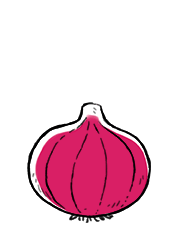

red onion
Red onions have a purplish-red skin, and flesh that is white and tinged with red. They are crunchy, pungent, sweet and a bit spicy when raw. When cooked, they become milder. They contain vitamin C, iron and calcium.
Red onions can be grilled, roasted, braised, caramelized and pickled. The bulbs will keep for 1-2 months when stored in a cool, dark and dry place with good air circulation.
onion
Onions, or Alium cepa L, are vegetables of the genus Allium There are many varieties, ranging in pungency, shape and color (red, yellow and white). Mature onion bulbs are the most commonly eaten, although onions can be consumed at any stage. Onions are available fresh, frozen, pickled, dried and powdered. Onions contain low amounts of essential nutrients.
Onions are toxic to many animals, like dogs and cats (ref).